MUNDIAL ESTADOS UNIDOS 1994

Seleccion Campeona del Mundo
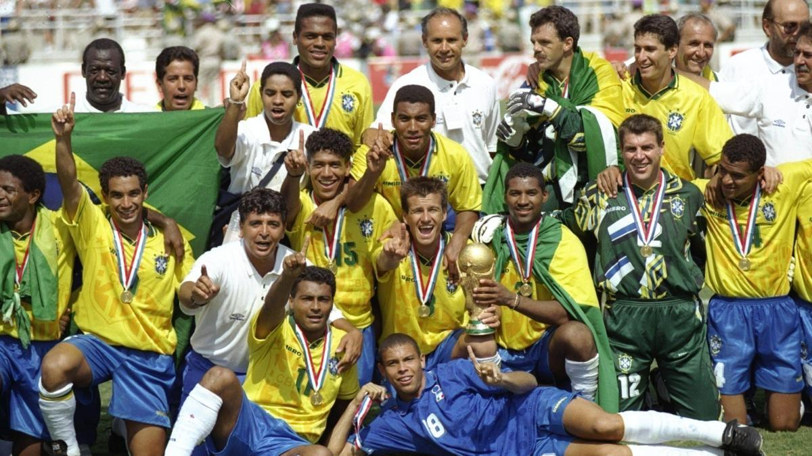
Poster oficial del Mundial de Estados Unidos 1994
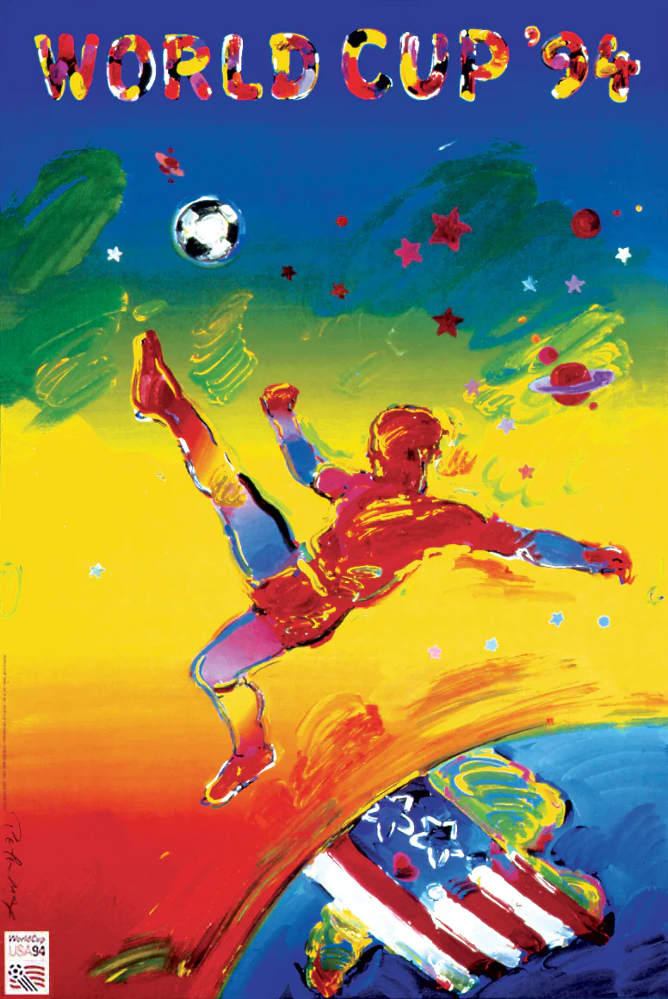
Trofeo del Mundial de Estados Unidos 1994
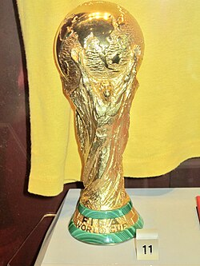
Album de cromos del Mundial de Estados Unidos 1994

Balon oficial del Mundial de Estados Unidos 1994
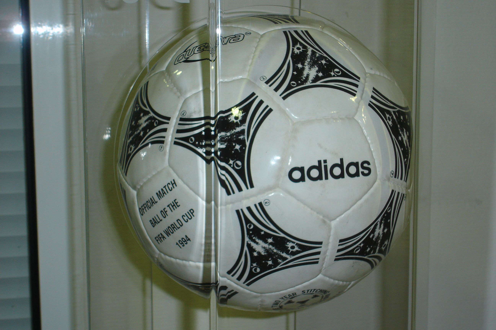
Participantes
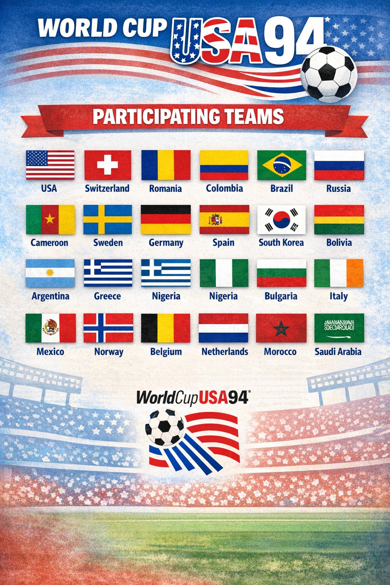
Estadisticas de Estados Unidos 1994
Estadios del Mundial Estados Unidos 1994
Rose Bowl Stadium

Citrus Stadium

Cotton Bowl Stadium
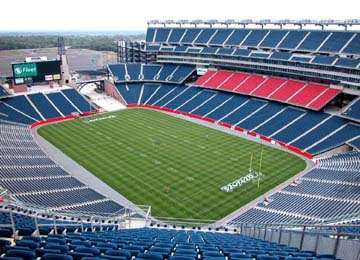
Foxboro Stadium

Giants Stadium

RFK Stadium
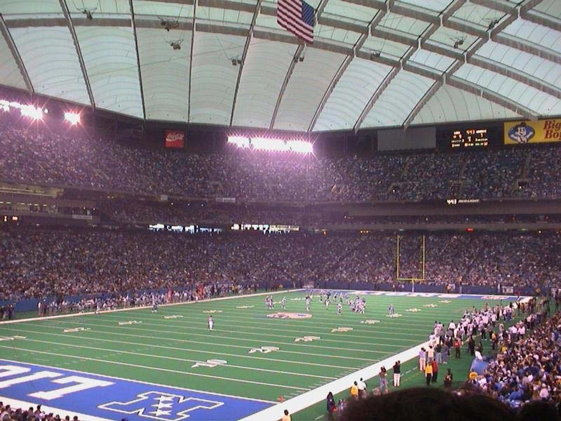
Silverdome Stadium

Soldier Stadium
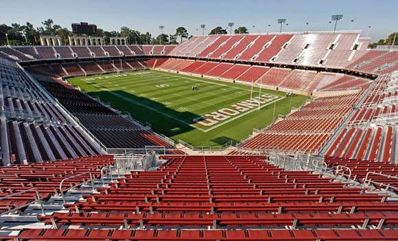
Stanford Stadium
Tercer Puesto Mundial de Estados Unidos 1994

Final del Mundial de Estados Unidos 1994
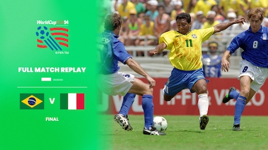
Canción oficial del Mundial Estados Unidos 1994
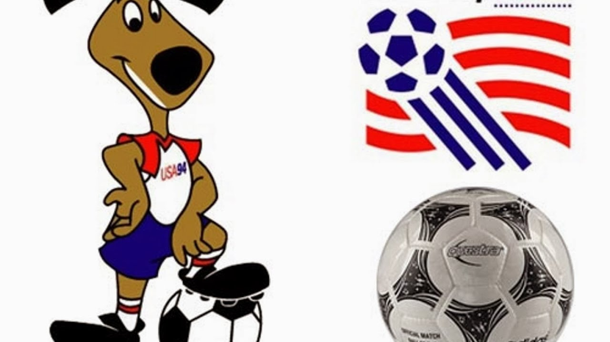
Mascota del Mundial de Estados Unidos 1994
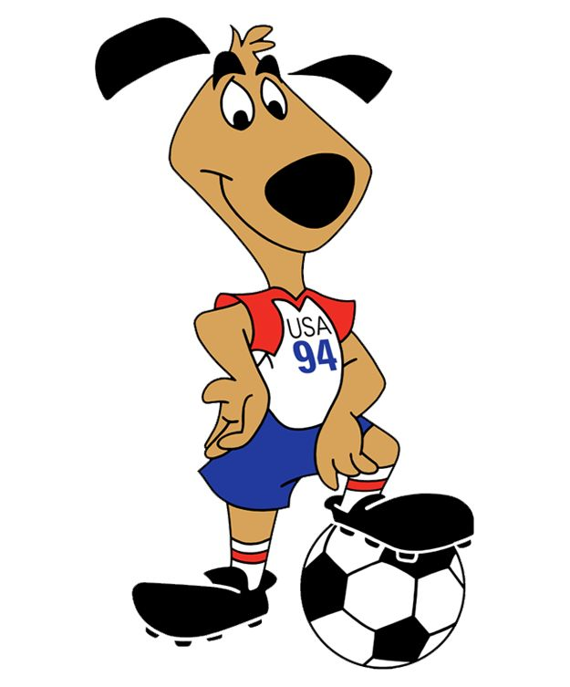
Goleadores de Estados Unidos 1994